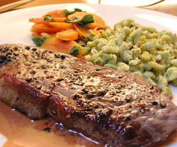

Entrecôte
5 von 6leicht salzen und mit zermalmten pfefferkörner bestreuen. in der sehr heissen pfanne auf beiden seiten sehr kurz braten

leicht salzen und mit zermalmten pfefferkörner bestreuen. in der sehr heissen pfanne auf beiden seiten sehr kurz braten

Montagsplausch Nr. 98. Der Abend hiess «spargelsuppe & pfeffer-entrecôte».